Step by step, one section of Settings at a time. The screenshots come from the prototype, signed in as Sandra Lopes (Admin at Ridgeline Concrete & Masonry) for people and rules, and as Tom Reilly (Admin at Northfield Framing & Siding) for the company, contacts, jobs and the schedule.
Open Settings from the modules screen (or the modules button at the top right). The menu on the left shows only the sections your role can open.
Employees
What it is for: one record per person who works on the jobs, used by the time clock, the timesheets and the job cost.
Who can do it
Anyone with Employee records (default role: Admin).
The list shows each employee with trade and crew, classification, hourly rate and burdened cost (hourly rate + labor burden), status and certifications about to expire. The banner at the top says whose employees they are: each company registers and manages its own.
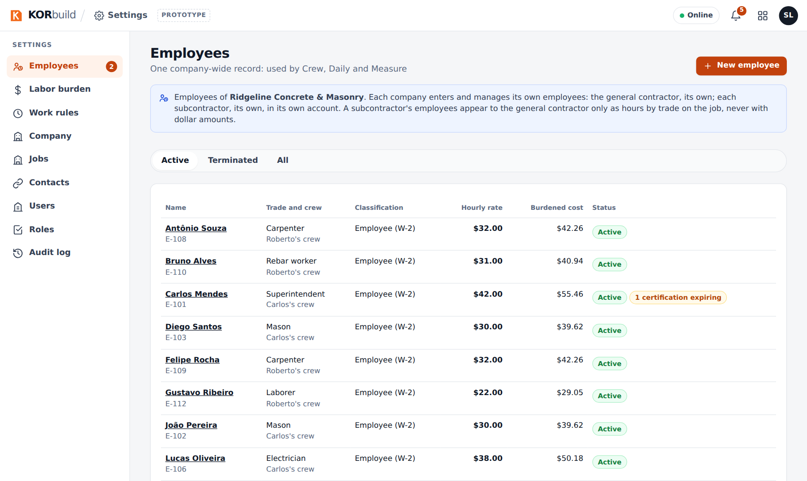
Add or edit an employee
- Click New employee (or open an employee and click Edit profile).
- Fill in:
- Identification: full name, code (the same employee ID as in payroll), phone, emergency contact. Company (employer) is fixed: the employee belongs to your account.
- Employment: classification (W-2 employee or 1099 contractor — contractors have no overtime and no labor burden), FLSA (exempt employees get no overtime), trade, crew, hire date, status and termination date.
- For a new employee, the starting hourly rate.
- Certifications: OSHA 10/30, licenses, equipment operator… with expiration dates.
- Privacy: the date the employee accepted the location notice (the time clock records location only while clocked in).
- Save.
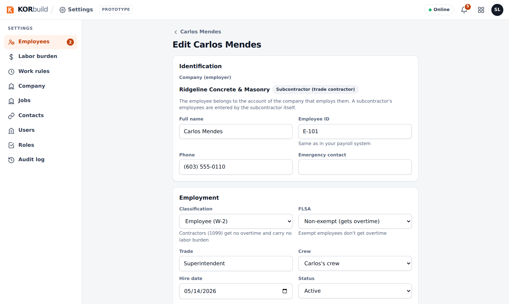
What KORbuild does not keep
SSNs and immigration documents stay in your payroll system. KORbuild keeps only the employee ID, for matching.
Change an hourly rate
- Open the employee: the cards show the current hourly rate, the overtime rate and the burdened cost.
- Click Change hourly rate, enter the new rate, the date it applies from and the reason.
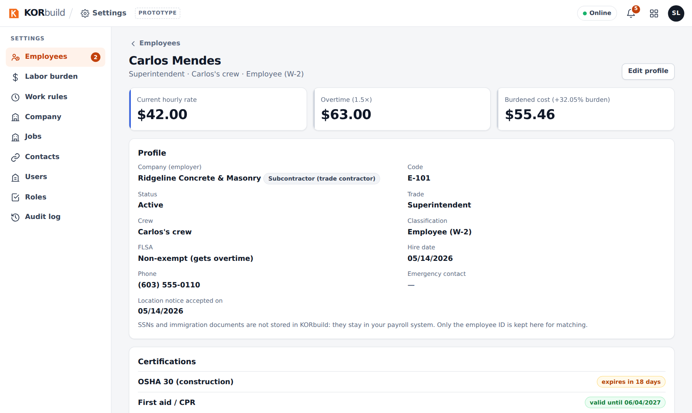
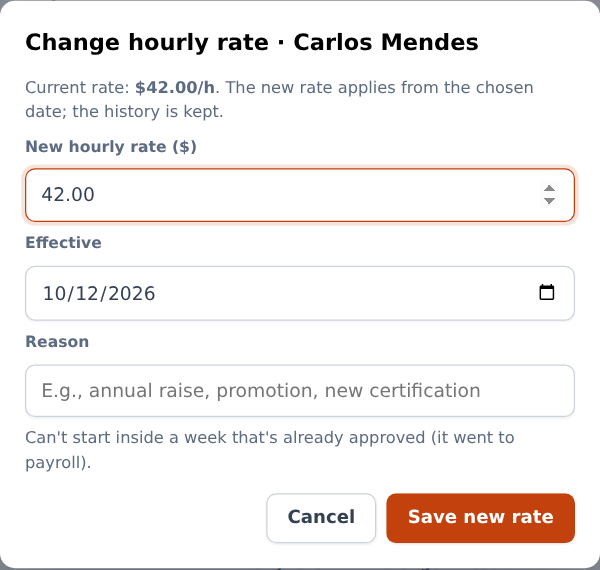
The hourly rate history keeps every rate with its dates, change and reason. Nothing is overwritten: each day's hours are paid at the rate in effect that day. A new rate cannot start inside a week already approved for payroll.
Labor burden
What it is for: what the company pays on top of wages, so the job cost shows the real cost of an hour.
Who can do it
Anyone with Labor burden and work rules (default role: Admin). Only for companies with Crew.
The screen shows the version in effect — FICA, FUTA, SUTA, workers' comp and benefits, with the total — and an example (someone earning $30.00/h costs $39.62/h). Below, the version history.
To change it, click New version, enter each percentage, the date it applies from (never in the past) and the reason.
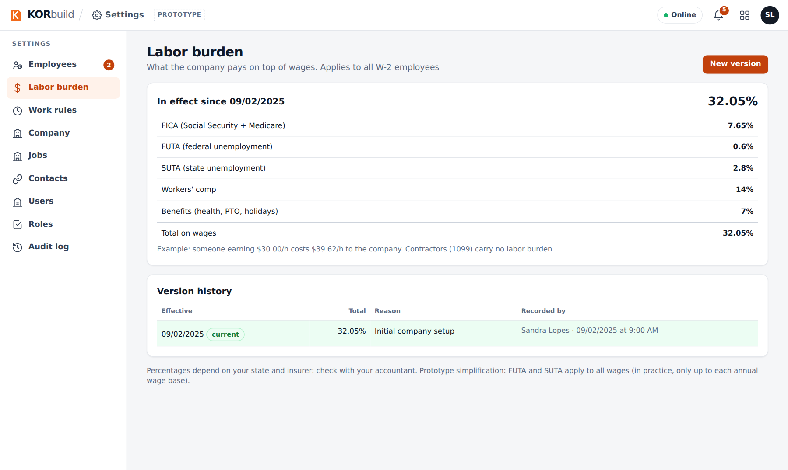
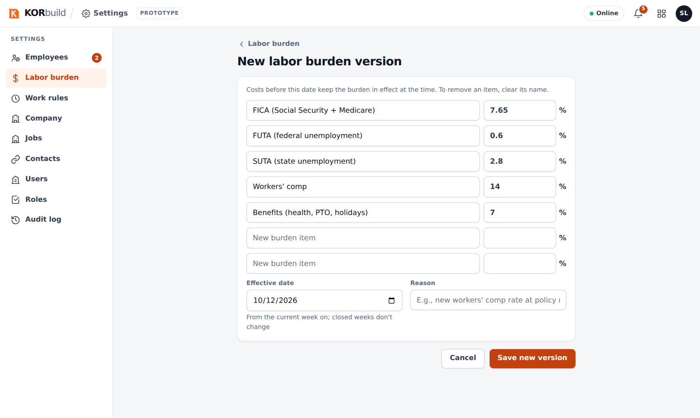
Ask your accountant
The percentages depend on your state and insurer. In the prototype, FUTA and SUTA apply to all wages; in practice they stop at each year's wage base.
Work rules
What it is for: the overtime and break rules that the time clock, the timesheets and the costs follow.
Who can do it
Anyone with Labor burden and work rules (default role: Admin). Only for companies with Crew.
The screen shows the rule in effect — weekly overtime, daily overtime, break, rounding — and the history. To change it:
- Click New version.
- Start from a template (federal FLSA, New Hampshire, California…) or fill in: weekly overtime (hours and factor), daily overtime and double time (optional), the minimum break and after how many hours.
- Choose the week it starts (rules apply to whole weeks, from a Monday) and the reason.
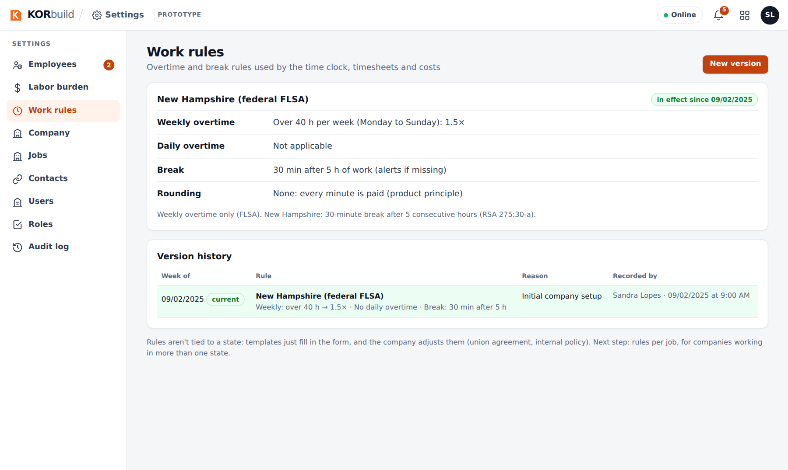
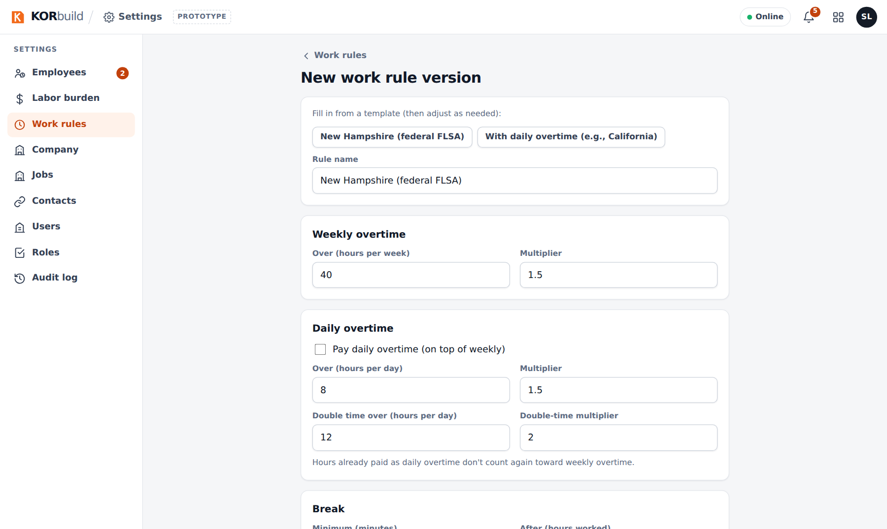
Company
What it is for: how your company appears on proposals, daily reports and documents.
Who can do it
Anyone with Company, account and plan (default role: Admin).
Fill in the logo, legal name, EIN, how the company works (subcontractor, general contractor or both), address, phone, email and website, licenses and insurance, and the default proposal terms (each proposal can still adjust them).
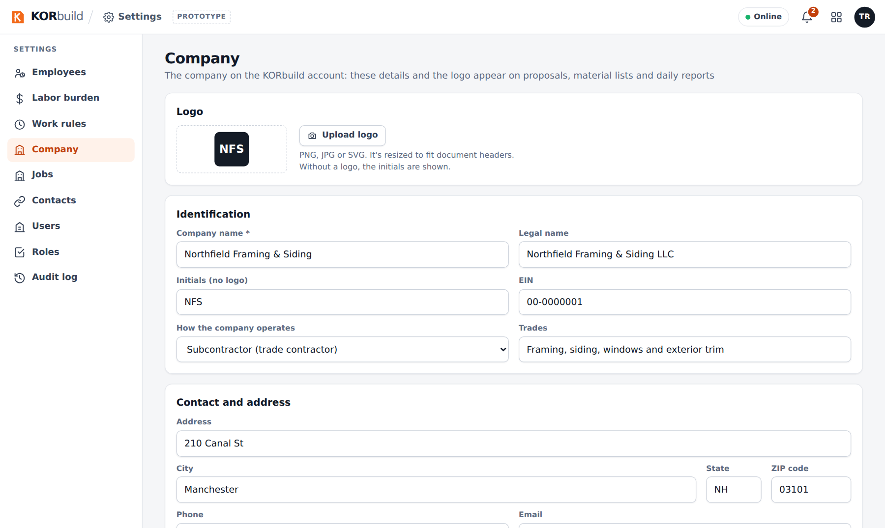
Contacts
What it is for: one directory of everyone outside the company — general contractors, clients (owners), suppliers and subcontractors.
Who can do it
Anyone with Contacts (default role: Admin). Choosing or creating a contact inside a project or a job is part of measuring or managing jobs.
- Open Contacts: the list, with a filter per tag.
- New contact (or open one): check what it is — a contact can have more than one tag — and fill in the details.
- For a supplier, check the cost codes it supplies: the material list for quotes (Measure) sends it only those items.
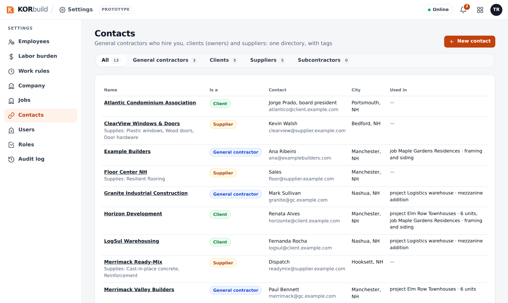
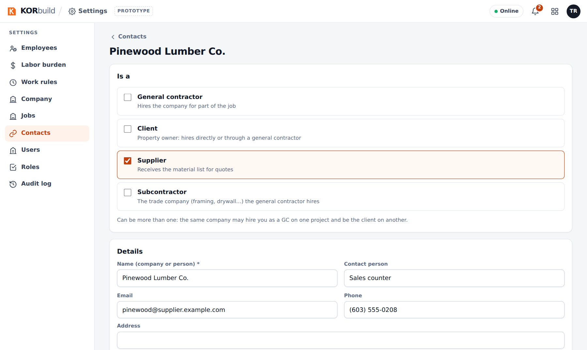
Contacts are not users: they receive daily reports, quote requests and proposals by link or email. A contact in use on a project or a job cannot be deleted.
Jobs
What it is for: one record per job, shared by every module.
Who can do it
Anyone with Add and edit jobs (default roles: Admin and Project manager). New job also appears on Daily › Jobs, and Edit job on each job.
Settings › Jobs lists every job with its client, dates, the person who fills out the daily report, the schedule (tasks and progress) and the status, with tabs per status.
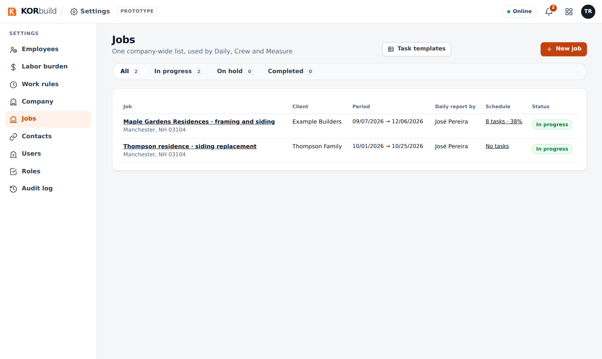
Create a job
- Click New job.
- Fill in:
- Job: name and status (In progress, On hold, Completed). Only jobs in progress require daily reports and show up on field phones and the time clock.
- Parties: the client (who receives the daily reports) and the property owner, if different. New creates a contact without leaving the form.
- Location and time clock geofence: address, city, state, ZIP; then click the job's location on the map (or Use current location if you are on site). The circle is the geofence: punches outside it are flagged for the office. The radius goes from 50 to 2,000 m (150 m by default). The same location drives the weather on daily reports.
- Dates and daily reports: start, finish, who fills out the daily report, and the workdays (the days that require a report).
- Schedule: Start from a template lays out the tasks between start and finish, in the template's proportions, and saves the first baseline. Or choose none and build it later.
- Click Create job.
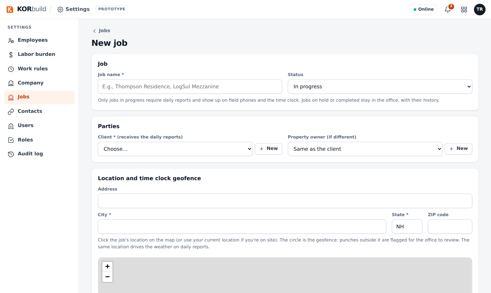
A won Measure project has Create job from this project, which opens this form already filled in; the project and the job stay linked.
On a general contractor's account
The general contractor's job has no daily report owner, workdays or schedule: each subcontractor keeps those on its own job linked to it. The jobs list shows the subcontractors on each job.
Task templates
Task templates (button on Settings › Jobs) are your company's standard schedules: a list of tasks with each one's share of the schedule (%, adding up to 100). Create them with New template; they are offered when creating a job or on a job with no tasks yet.
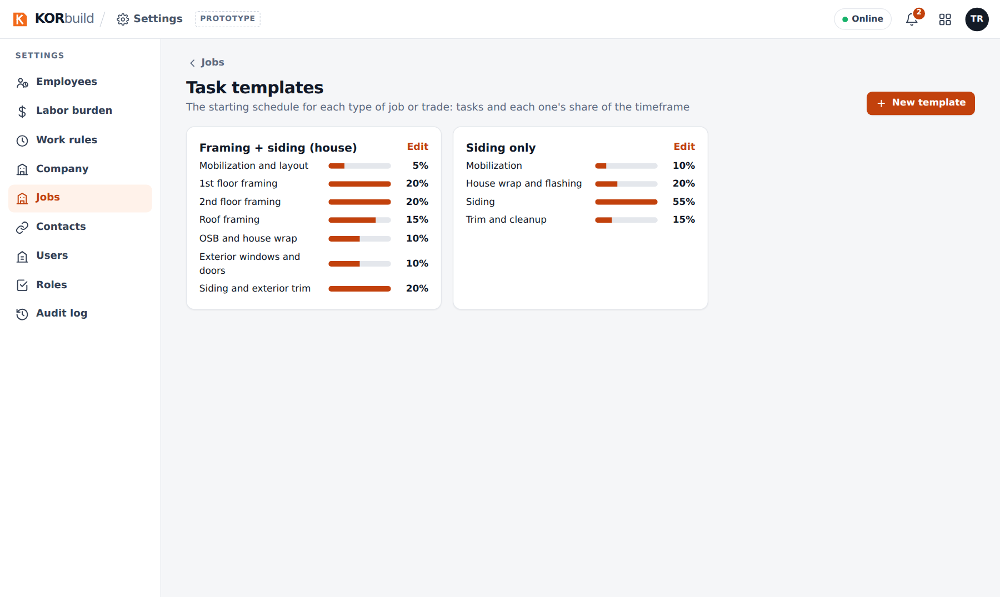
The job schedule
What it is for: knowing whether the job is on time, task by task — and telling the general contractor.
Who can do it
Building it: anyone with Build the job schedule (default roles: Admin and Project manager) at the company doing the work. Foremen see the 3-week look-ahead. The general contractor sees the published versions.
Open it from the job: Daily › Jobs › a job › Open schedule (or Build schedule when it has no tasks).
The top cards show the actual progress against planned to date, the tasks behind schedule (and at risk) and the forecast finish against the baseline. Below, each task with its dates, duration, person responsible, status, % complete and variance against the baseline, and the Gantt chart: the colored bar is the task (filled to its %), the gray bar under it is the baseline, the vertical line is today.
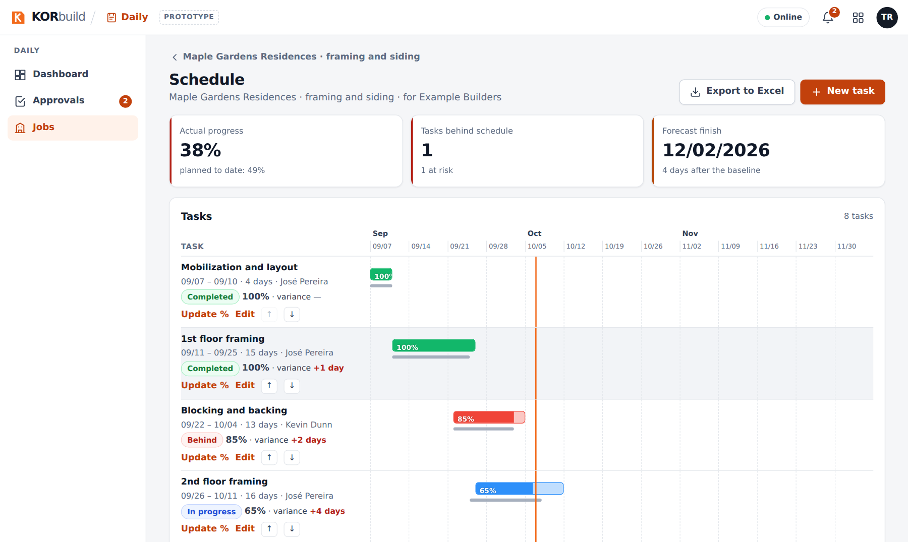
Work with the tasks
- New task: name, start, finish, person responsible.
- Update %: the new % complete, with a note; it goes to the task history.
- Edit: dates and name; the arrows change the order.
- Save new baseline: when the plan changes for good (with a reason). Variances are always measured against the latest baseline; older baselines are kept.
- Export to Excel: a real spreadsheet with your company header, the task table and the Gantt bars week by week.
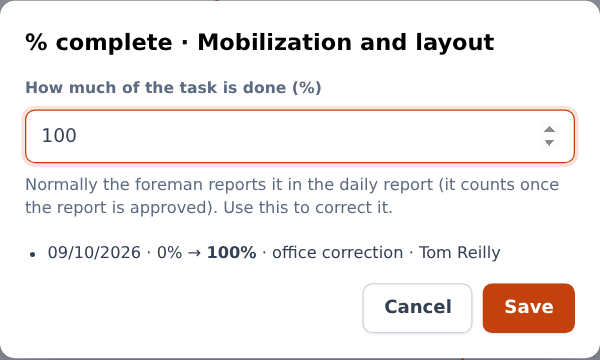
% complete from the daily report
On the daily report, each activity can point to a schedule task and its % complete. When the report is approved, the % goes to the task, with the report as its source. The foreman sees the 3-week look-ahead on the job screen of the phone.
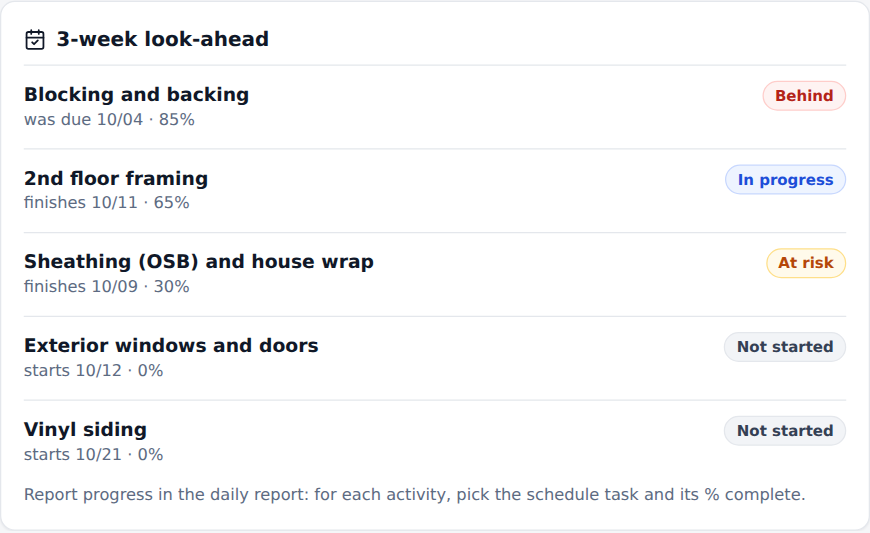
Publish to the general contractor
- Click Publish to client.
- Confirm: the general contractor will see this version — dates, progress and variances — without being able to edit it. Later changes only show up when you publish again.
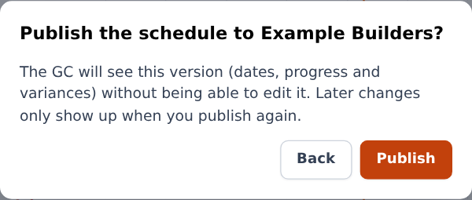
The general contractor sees Subcontractor schedules on its job, with the version and date of each, opens it read-only and can export it to Excel.
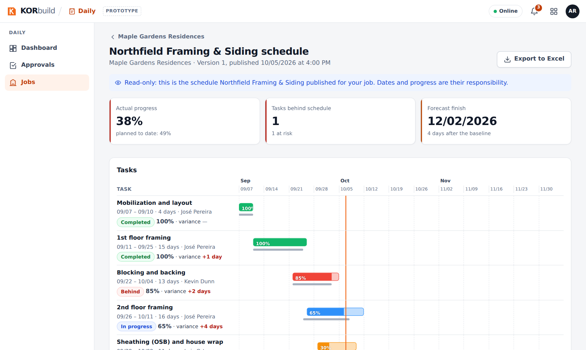
Users
What it is for: who signs in, and with which role.
Who can do it
Anyone with Users and access roles (default role: Admin).
The list shows each user with email, role, the employee record linked to them and the last sign-in. To add one:
- Click New user.
- Fill in name, email (sign-in) and job title.
- Employee record: link the user to their employee record if they clock in on their own phone (required for that), or choose Not a field employee.
- Choose the access role. Each role shows where the person lands when signing in (for example, a Worker goes straight to My time clock).
- Save.
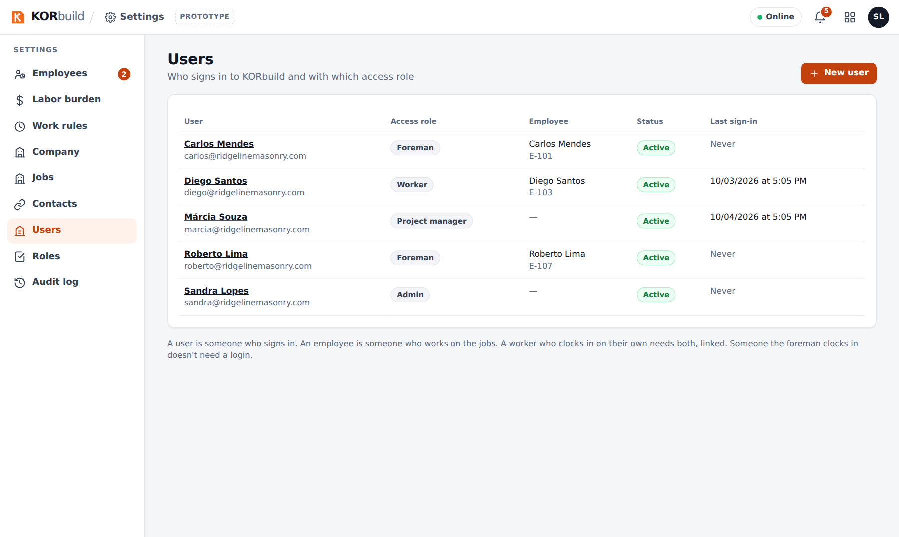
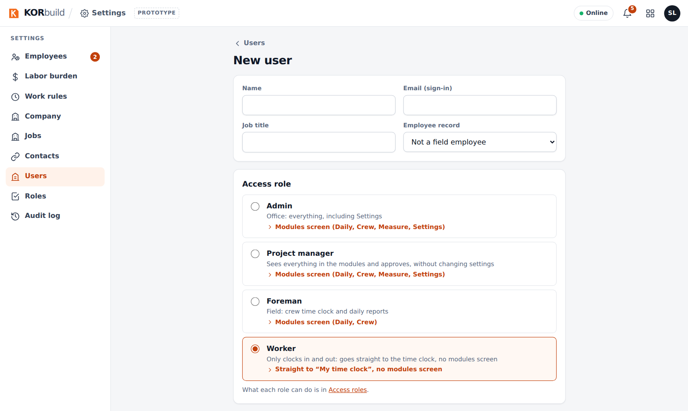
Access roles
What it is for: deciding what each role can do.
Who can do it
Anyone with Users and access roles (default role: Admin).
The matrix shows the permissions (grouped by module) against the roles, with how many users have each role. Check or uncheck and click Save permissions. New role creates a role from an existing one. The Admin role is locked.
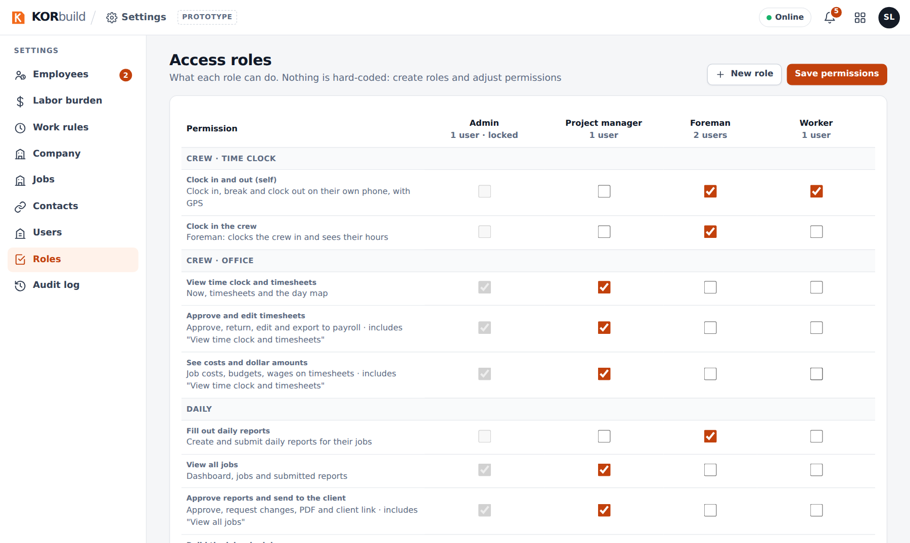
See Roles and permissions for the full catalog and the rules.
Audit log
Every change in Settings — employees, hourly rates, labor burden, work rules, jobs, users, roles, contacts, prices — with when, who, what, the value before and after, and the reason.
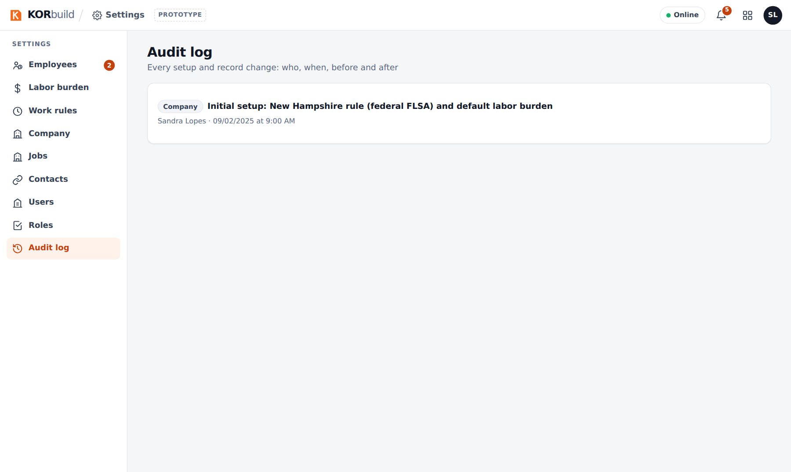
Messages and alerts
| Message | What it means | What to do |
|---|---|---|
| Certification expires in N days | A certification expires within 30 days (also on the menu and in the notifications). | Renew it and update the date. |
| A rate cannot start in an approved week | The week already went to payroll. | Choose a date after it. |
| A version cannot start in the past | Labor burden and work rules apply only forward. | Choose today or a later date. |
| A role in use cannot be deleted | Users still have it. | Change their role first. |
| The company must keep someone who manages access | You tried to remove the last user with Users and access roles. | Give it to another active user first. |
| Choose who fills out the daily report | A job in progress needs a person responsible. | Pick a user with Fill out daily reports. |